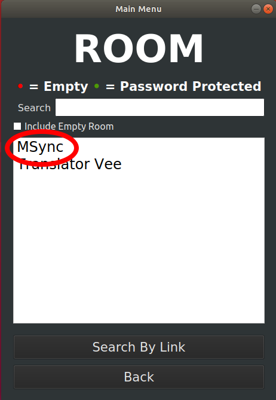
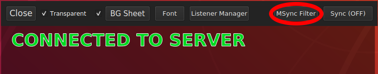
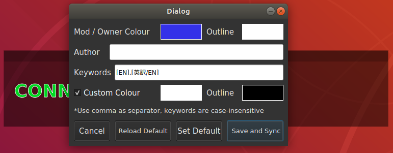
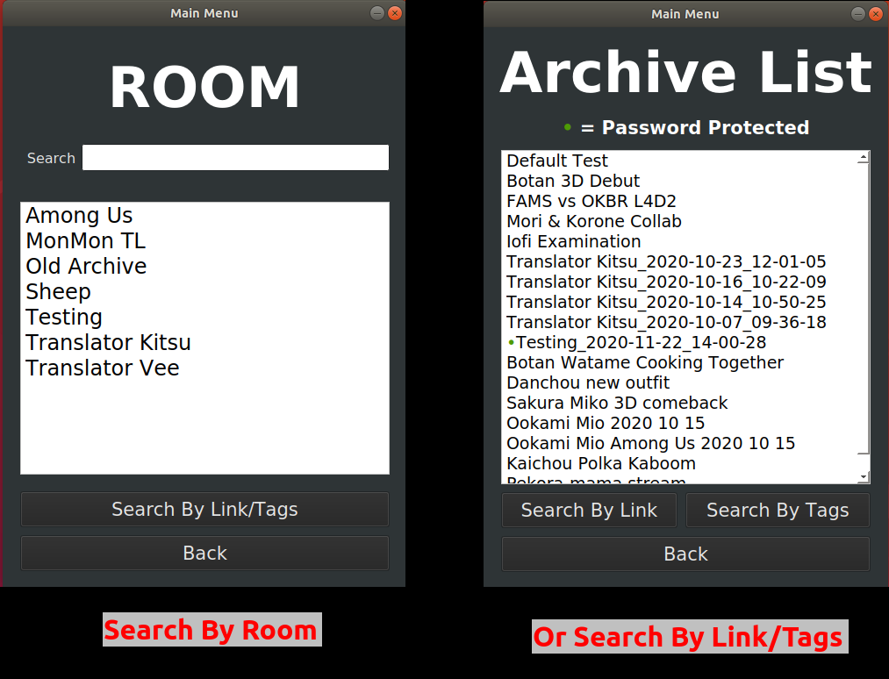
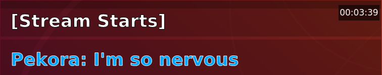
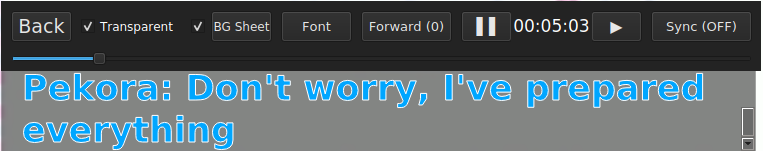
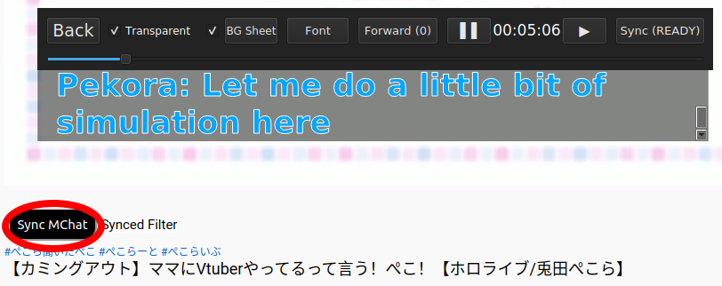

First of all, remember that live translating takes a lot of brain power and has no means to recheck. So expect mistakes and don't take everything at face value.
The Listener's side is straight-forward and easy.
1. If you use desktop, you'll start here. Just go ahead and click login listener.

2. If you use mobile, you'll start here. If you can't find the room that you want, try check the "Empty Room" box.

3. Search for the room that you want.

4. Pick a room, then click Enter button.

5. If you're using android, you'll have to use SPLIT SCREEN for maximum enjoyment.

1. Choose "Local Room" and then click enter.
2. Click create button to create local room.

3. Click Sync button in the extension.

And you're done, you can apply filtering and custom styling explained in the following section.
1. Click Filtering and Custom Styling button in the extra panel.
2. It'll open filtering and custom styling panel.
1. You can call an extra setting panel if you move your cursor to the upper area of the app window.
Or tap if you're using mobile client.

2. Extra panel contains a lot of extra features.

3. Extra features including transparent background.

1. Open the desktop app and click open archive.

2. Pick a room and then click enter.
3. Pick a session and click enter

4. Basically the page view of Archive Viewer.

5. You can change into auto-scroll to simulate live TL, just follow the steps in the next picture.
6.The auto-scroll view, it has pause and play button. By nature, live TL is a little bit delayed compared to the stream, so you might want to run the stream a bit ahead.
7. Auto-scroll view has the same features as usual listeners.

1. Go to auto-scroller mode.
2. Click Sync button in the extra panel.
3. Click Sync button in the extension.

4. Pick the local client that you want to synchronize.

5. Your extension is properly synced when you get this notification.